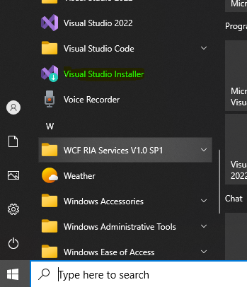

1. The first thing to do is check and make sure you have what Visual Studio needs in order for you to create these applications.
A. Run "Visual Studio Installer"

B. Whichever version of Visual Studio you are using, click on the “Modify” button.
C. You want to make sure you have the following installed.
i. If not, check the box and have it installed.
D. To install, check the box, then click, “Modify” button.
E. It will start to install.

2. Start up Visual Studio
a. Click “Create a new project”.
b. Type “Windows Forms App”. Then select the one shown below.
c. Enter a name for your project, then click the “Next” button
d. Select the Framework, then click the “Create” button.
e. It should pull up an empty form.
3. Now to install a NuGet package. Click on the “Tools” menu at the top of the Visual Studio window, then select “NuGet Package Manager”, then finally “Manage NuGet Packages for Solution”.
4. Select the “Browse” tab. Make sure that the package source is “nuget.org”. Then search for “WebView.WindowsForms”. The following one is what you want.
5. This is the version that the video suggested so I’m using it for now. Version: 6.0.540. Check the “WinFormsBlazorApp”, set version to “6.0.540”, then click the “Install” button.
6. Click, “I Accept”.
7. Once installed, it should show up under “Dependencies” in the Solution Explorer
8. Now right click on your Project name, then select “Edit Project File”.
9. Now change "Microsoft.NET.Sdk" to "Microsoft.NET.Sdk.Razor"
a. Before
b. After
10. Now right click on your project name again, then select “Build”. Could be the same under the build menu option, but this is how the video did it.
11. Now right click on your project name again, then select “Add”, then select “New Item”.
12. You should now be able to see “Razor Component” as an option.
13. The first thing that you will want to do is create a “_Imports.razor” component.
14. Now highlight everything and delete it from the “_Imports.razor” so that it will be empty.
a. Before
b. After
15. Now add the following using statement.

16. Now right click on your app name again, select “Add”, then select “New Folder”.

a. Name it “wwwroot”.
b. Now right click on the “wwwroot” folder, select “Add”, then select “New Item”
c. Add an “HTML Page” called “index.html”
d. You should see something like the following.
e. The video had me add some code to this file.
17. Now right click on the “wwwroot” folder, click “Add”, then click on “New Folder”.
a. Name the folder “css”
b. Now right click on the “css” folder, click “Add”, then click on “New Item”.
c. Search for “css”. Select “Style Sheet”, then name it “app.css”. Then click the “Add” button.
d. This is what the index.html points to.
e. This is what the instructor added to the app.css style sheet.
18. Now we are going to add a “Razor Component”. Right click on the App name, select “Add”, then select “New Item”.
a. Add Razor Component named “Counter.razor”.
b. Add the following code to the Counter.razor page.
19. Now to open up your Windows Form Designer page. Right click on your form, then select “View Designer”.
a. Now if you go over to tools under WebView2 you will see a couple of options. The BlazorWebView is the one you want.
b. Drag and drop the “BlazorWebView” one over to the form.
c. Right click on “WebView2” and the click on “Properties.”
i. Under “Properties” look for “Dock”. Currently it saye “None”. You want to change this so that it fills the form page.
ii. To fill the page select the middle option.
iii. This is what it should look like when the WebView2 fills the form.
20. At the top of the “Form1.cs” add the following using statements.
a. Right click on the “Form1.cs”, then click on “View Code”.
b. Now add the using statements at the top.
c. Now add the following lines of code.
21. Now assuming that everything is setup properly, you should be able to run the program. Run “Build” before you do.